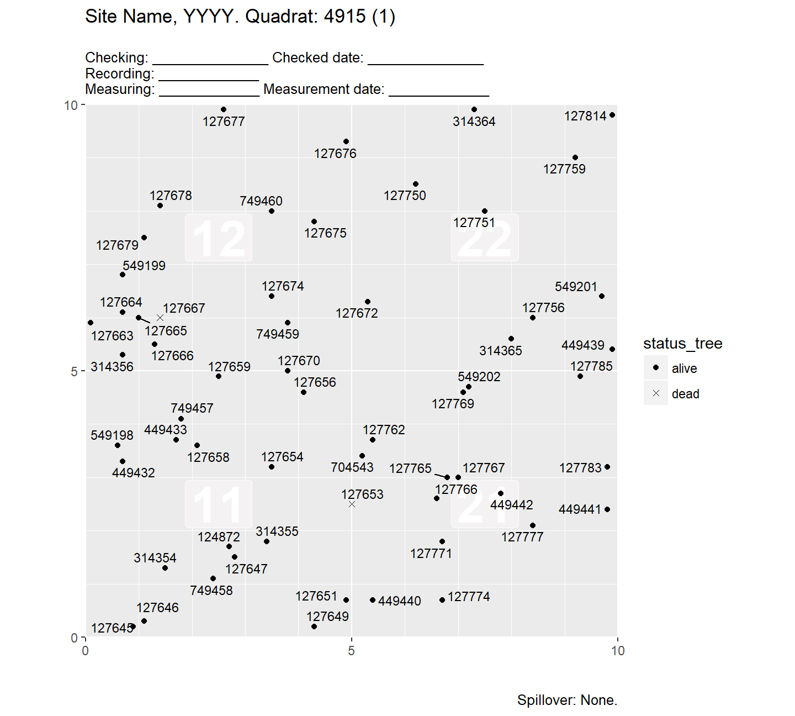
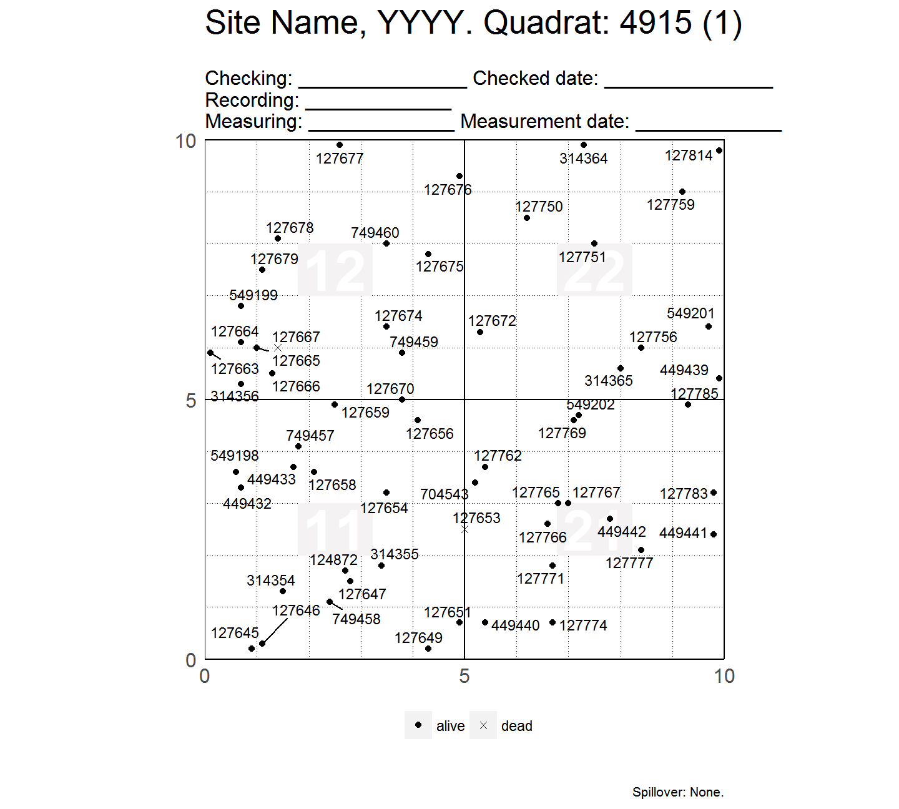
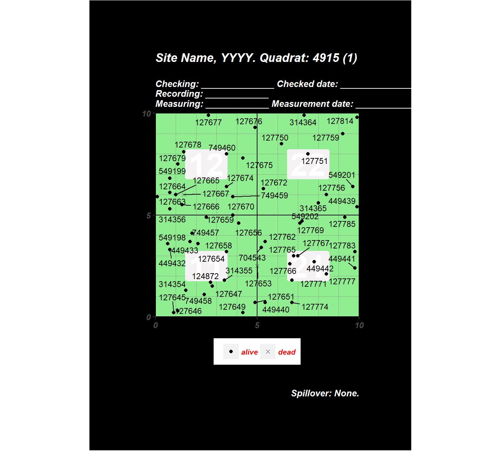
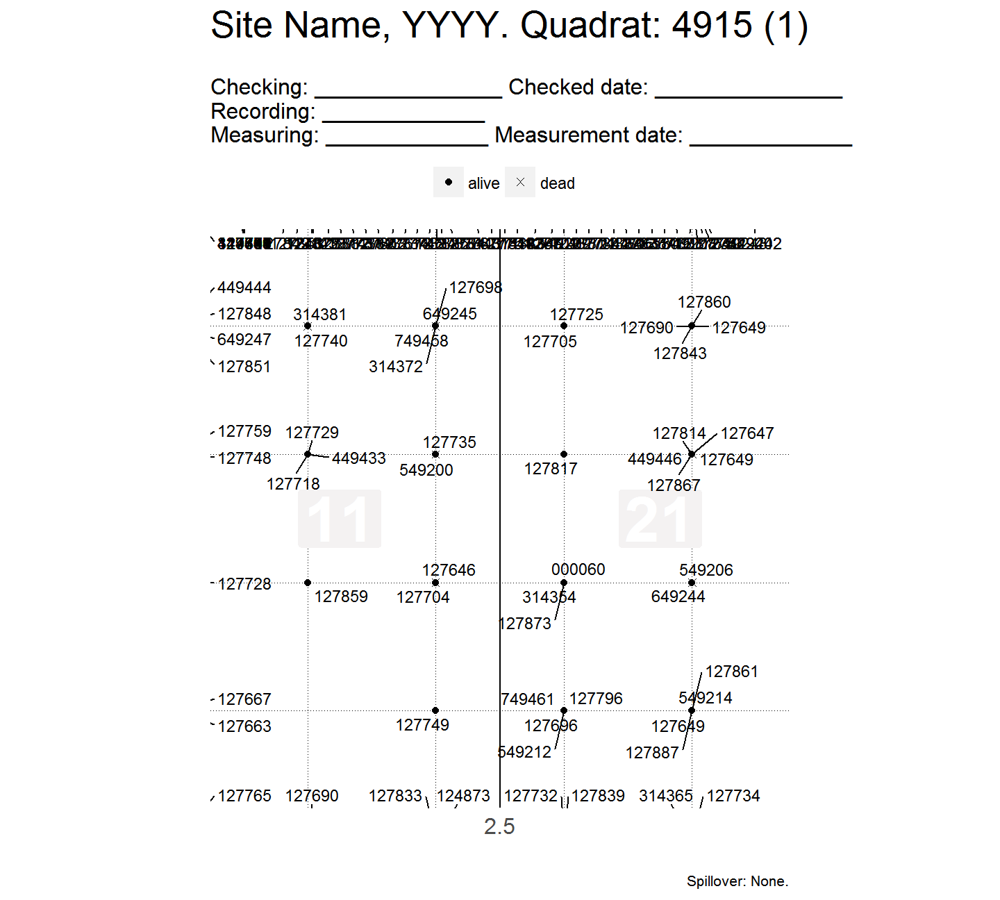
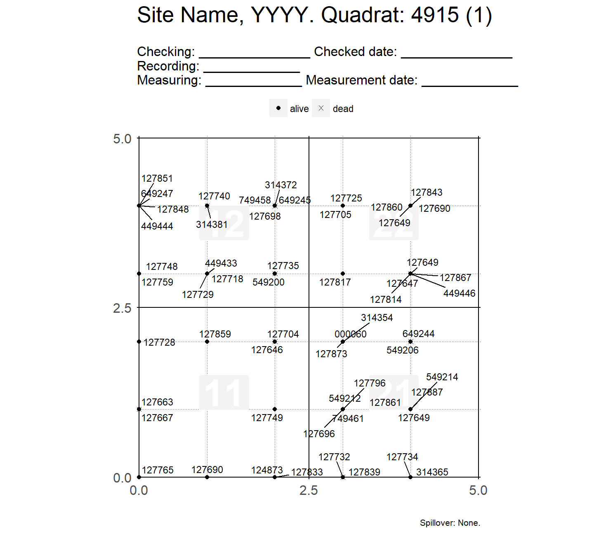

This vignette shows the same code that you can find in the help files of maply_sp_elev(), maply_quad() and maply_tag(), but here you can see the output.
##
## Attaching package: 'dplyr'## The following objects are masked from 'package:stats':
##
## filter, lag## The following objects are masked from 'package:base':
##
## intersect, setdiff, setequal, unionmaply_quad(): Map trees within a quadrat
# Filter the data you want. For example:
# (see ?vft_4quad)
want <- filter(
vft_4quad,
CensusID == 6,
PlotID == 1
)
p <- maply_quad(want)
#> * Appending tags of dead trees with the suffix '.d'
#> Warning in fgeo.base::str_suffix_match(crucial$tag, crucial$status,
#> status_d, : No `string` matches `dead`. Is this what you expect?
#> * Standarizing `dbh` by the count of `dbh` measurements
# Visualizing only the first plot of `p`
first(p)
#> NULL
# Printing all plots of `p` to .pdf, with parameters optimized for size letter
pdf("map.pdf", paper = "letter", height = 10.5, width = 8)
p
#> named list()
dev.off()
#> png
#> 2
# Be careful if filtering by DBH: You may unintentionally remove dead trees.
# * Confirm this dataset has dead trees:
# (see `?vft_4quad`)
dead <- vft_4quad %>%
add_status_tree(status_a = "alive", status_d = "dead") %>%
pick_top(QuadratID) %>%
filter(status_tree == "dead")
select(dead, Tag, Status, status_tree, DBH)
#> # A tibble: 132 x 4
#> Tag Status status_tree DBH
#> <chr> <chr> <chr> <dbl>
#> 1 102031 dead dead NA
#> 2 102081 dead dead NA
#> 3 102088 dead dead NA
#> 4 102188 dead dead NA
#> 5 102217 dead dead NA
#> 6 102221 dead dead NA
#> 7 102301 dead dead NA
#> 8 102304 dead dead NA
#> 9 102381 dead dead NA
#> 10 102425 dead dead NA
#> # ... with 122 more rows
maply_quad(dead)
#> * Appending tags of dead trees with the suffix '.d'
#> * Standarizing `dbh` by the count of `dbh` measurements
#> $`621`
#> Warning: Removed 132 rows containing missing values (geom_point).
# * If you filter by `DBH`, you loose the dead trees becaue their `DBH = NA`
wrong <- filter(dead, DBH > 10)
maply_quad(wrong)
#> * Appending tags of dead trees with the suffix '.d'
#> Warning in fgeo.base::str_suffix_match(crucial$tag, crucial$status,
#> status_d, : No `string` matches `dead`. Is this what you expect?
#> * Standarizing `dbh` by the count of `dbh` measurements
#> named list()
# * The right way to do it is to explicietly inlcude rows where DBH = NA
right <- filter(dead, DBH > 10 | is.na(DBH))
maply_quad(right)
#> * Appending tags of dead trees with the suffix '.d'
#> * Standarizing `dbh` by the count of `dbh` measurements
#> $`621`
#> Warning: Removed 132 rows containing missing values (geom_point).
# Keeping dead trees with `is.na(DBH)` (e.g. tag 127885.d on the bottom right)
p <- filter(vft_4quad, DBH > 20 | is.na(DBH))
first(maply_quad(p))
#> * Appending tags of dead trees with the suffix '.d'
#> * Standarizing `dbh` by the count of `dbh` measurements
#> Warning: Removed 297 rows containing missing values (geom_point).
# For more complex filtering, see also ?fgeo.tool::drop_twice_dead)
# Customizing the maps ----------------------------------------------------
# A custom title and header
myheader <- paste(
" ",
"Head column 1 Head column 2 ",
" ",
" ........................................................................",
" ........................................................................",
sep = "\n"
)
# See ?vft_1quad
maply_quad(vft_1quad, title_quad = "My Site, 2018. Quad:", header = myheader)
#> * Appending tags of dead trees with the suffix '.d'
#> * Standarizing `dbh` by the count of `dbh` measurements
#> $`621`
#> Warning: Removed 297 rows containing missing values (geom_point).
# Tweak the theme with ggplot
library(ggplot2)
maply_quad(
vft_1quad,
title_quad = "My Site, 2018. Quad:",
header = map_quad_header("spanish"),
tag_size = 3,
theme = theme_map_quad(
axis.text = NULL, # NULL shows axis.text; element_blank() doesn't.
plot.title = element_text(size = 15),
plot.subtitle = element_text(size = 5),
panel.background = element_rect(fill = "grey")
)
)
#> * Appending tags of dead trees with the suffix '.d'
#> * Standarizing `dbh` by the count of `dbh` measurements
#> $`621`
#> Warning: Removed 297 rows containing missing values (geom_point).
maply_tag(): Map tree tags by status
# Filtering the data to map -----------------------------------------------
# Filter the data you want. For example:
# (see ?vft_1quad)
want <- filter(vft_1quad, CensusID == 4, PlotID == 1)
p <- maply_tag(want)
# Visualizing only the first plot of `p`
first(p)
# Printing all plots of `p` to .pdf, with parameters optimized for size letter
pdf("map.pdf", paper = "letter", height = 10.5, width = 8)
p
#> $`621_1`
#>
#> $`621_2`
#>
#> $`621_3`
#>
#> $`621_4`
dev.off()
#> png
#> 2
# Be careful if filtering by DBH: You may unintentionally remove dead trees.
# * Confirm this dataset has dead trees:
# (see `?vft_4quad`)
dead <- vft_4quad %>%
add_status_tree(status_a = "alive", status_d = "dead") %>%
pick_top(QuadratID) %>%
filter(status_tree == "dead")
select(dead, Tag, Status, status_tree, DBH)
#> # A tibble: 132 x 4
#> Tag Status status_tree DBH
#> <chr> <chr> <chr> <dbl>
#> 1 102031 dead dead NA
#> 2 102081 dead dead NA
#> 3 102088 dead dead NA
#> 4 102188 dead dead NA
#> 5 102217 dead dead NA
#> 6 102221 dead dead NA
#> 7 102301 dead dead NA
#> 8 102304 dead dead NA
#> 9 102381 dead dead NA
#> 10 102425 dead dead NA
#> # ... with 122 more rows
first(maply_tag(dead))
#> Warning: No observation has .status = alive
#> * Detected values: dead
# * If you filter by `DBH`, you loose the dead trees becaue their `DBH = NA`
wrong <- filter(dead, DBH > 10)
wrong
#> # A tibble: 0 x 33
#> # ... with 33 variables: DBHID <int>, PlotName <chr>, PlotID <int>,
#> # Family <chr>, Genus <chr>, SpeciesName <chr>, Mnemonic <chr>,
#> # Subspecies <chr>, SpeciesID <int>, SubspeciesID <chr>,
#> # QuadratName <chr>, QuadratID <int>, PX <dbl>, PY <dbl>, QX <dbl>,
#> # QY <dbl>, TreeID <int>, Tag <chr>, StemID <int>, StemNumber <int>,
#> # StemTag <int>, PrimaryStem <chr>, CensusID <int>,
#> # PlotCensusNumber <int>, DBH <dbl>, HOM <dbl>, ExactDate <date>,
#> # Date <int>, ListOfTSM <chr>, HighHOM <int>, LargeStem <chr>,
#> # Status <chr>, status_tree <chr>
# * The right way to do it is to explicietly inlcude rows where DBH = NA
right <- filter(dead, DBH > 10 | is.na(DBH))
right
#> # A tibble: 132 x 33
#> DBHID PlotName PlotID Family Genus SpeciesName Mnemonic Subspecies
#> <int> <chr> <int> <chr> <chr> <chr> <chr> <chr>
#> 1 385081 luquillo 1 Araliac~ Scheff~ morototoni SCHMOR <NA>
#> 2 385101 luquillo 1 Rubiace~ Psycho~ brachiata PSYBRA <NA>
#> 3 385102 luquillo 1 Piperac~ Piper glabrescens PIPGLA <NA>
#> 4 385153 luquillo 1 Piperac~ Piper glabrescens PIPGLA <NA>
#> 5 385160 luquillo 1 Araliac~ Scheff~ morototoni SCHMOR <NA>
#> 6 385161 luquillo 1 Arecace~ Presto~ acuminata PREMON <NA>
#> 7 385188 luquillo 1 Urticac~ Cecrop~ schreberia~ CECSCH <NA>
#> 8 385189 luquillo 1 Rubiace~ Psycho~ brachiata PSYBRA <NA>
#> 9 385232 luquillo 1 Laurace~ Nectan~ turbacensis OCOSIN <NA>
#> 10 385240 luquillo 1 Rubiace~ Psycho~ brachiata PSYBRA <NA>
#> # ... with 122 more rows, and 25 more variables: SpeciesID <int>,
#> # SubspeciesID <chr>, QuadratName <chr>, QuadratID <int>, PX <dbl>,
#> # PY <dbl>, QX <dbl>, QY <dbl>, TreeID <int>, Tag <chr>, StemID <int>,
#> # StemNumber <int>, StemTag <int>, PrimaryStem <chr>, CensusID <int>,
#> # PlotCensusNumber <int>, DBH <dbl>, HOM <dbl>, ExactDate <date>,
#> # Date <int>, ListOfTSM <chr>, HighHOM <int>, LargeStem <chr>,
#> # Status <chr>, status_tree <chr>
first(maply_quad(right))
#> * Appending tags of dead trees with the suffix '.d'
#> * Standarizing `dbh` by the count of `dbh` measurements
#> Warning: Removed 132 rows containing missing values (geom_point).
# Keeping dead trees with `is.na(DBH)` (e.g. tag 127885.d on the bottom right)
p <- filter(vft_4quad, DBH > 20 | is.na(DBH))
first(maply_tag(p))
# For more complex filtering, see also ?fgeo.tool::drop_twice_dead
# Customizing the maps ----------------------------------------------------
# Common tweaks
p <- maply_tag(vft_1quad, show_page = FALSE, show_subquad = FALSE)
first(p)
p <- maply_tag(
vft_1quad,
title_quad = "BCI 2012. Quadrat: ",
bl = "bottom-left", br = "bottom-right", tr = "top-right", tl = "top-left",
header = "Line 1: _________\nLine 2:\nLine 3:.....................",
subquad_offset = -1,
point_size = 3, point_shape = c(17, 6),
tag_size = 2,
move_edge = 0.5
)
first(p)

# Tweaking the default theme of maply_tag()
small_tweak <- theme_map_tag(legend.position = "bottom")
p <- maply_tag(vft_1quad, theme = small_tweak)
first(p)
large_tweak <- theme(
legend.position = "bottom",
legend.title = element_blank(),
legend.text = element_text(size = 8, colour = "red"),
text = element_text(size = 11, face = "bold.italic", colour = "white"),
plot.background = element_rect(fill = "black"),
plot.margin = margin(2, 2, 2, 2, "cm"),
strip.background = element_rect(fill = "darkgreen"),
strip.text = element_text(colour = "white"),
# make grid to dissapear by matching background colour
panel.background = element_rect(fill = "lightgreen"),
panel.grid.minor = element_line(colour = "black", linetype = "dotted"),
panel.grid.major = element_line(colour = "black")
)
p <- maply_tag(vft_1quad, theme = large_tweak)
first(p)
# Quadrat and subquadrat dimensitons
# Adapting the dimensions of quadrat and subquadrat to the range of qx and qy
# Creating new data set with QX and QY ranging 0-100
smaller <- vft_1quad
n <- nrow(smaller)
smaller$QX <- sample(0:10, n, replace = TRUE)
smaller$QY <- sample(0:10, n, replace = TRUE)
p <- maply_tag(smaller, x_q = 10, x_sq = 2.5)
#> Warning: qx, qy should be double. Type found: integer
#> * Changing type (of qx, qy) accordingly.
first(p)
# If limit-lines aren't visible, try extending the grid a little
p <- maply_tag(smaller, x_q = 10, x_sq = 2.5, move_edge = 0.25)[1]
#> Warning: qx, qy should be double. Type found: integer
#> * Changing type (of qx, qy) accordingly.
first(p)
maply_sp_elev(): Map species and elevation data
census <- fgeo.tool::pick_top(bciex::bci12s7mini, sp, 2)
elevation <- bciex::bci_elevation
# Map on multiple pages ---------------------------------------------------
p1 <- maply_sp_elev(census)
# Showing first map only.
p1[[1]]

# Tweaking
p3 <- maply_sp_elev(
census,
elevation,
species = "all",
fill = "white",
shape = 21,
point_size = 5,
contour_size = 1,
low = "grey",
high = "black",
hide_legend_color = TRUE,
bins = 7,
label_elev = FALSE
)
p3[[1]]
# Map on a single page (maybe multiple panels) ----------------------------
# Simplest way to map elevation data only
map_elev(elevation)


# For maximum control, you can compose maps as you like
# Traditional: g(f(x))
contour_elev(map_gx_gy_elev(elevation))

# With traditional sintax: As you add more functions readability decreases.
theme_default(
wrap(
add_sp(
hide_legend_color(
hide_axis_labels(
label_elev(
contour_elev(
limit_gx_gy(
map_gx_gy_elev(elevation),
xlim = c(0, 1200)
),
contour_size = 0.5
),
label_color = "red"
)
)
), census, point_size = 5
), "sp"
), legend.position = "top"
)
# Same with the pipe: As you add more functions readability doesn't change
map_gx_gy_elev(elevation) %>%
limit_gx_gy(xlim = c(0, 1200)) %>%
contour_elev(contour_size = 0.5) %>%
label_elev(label_color = "red") %>%
hide_axis_labels() %>%
hide_legend_color() %>%
add_sp(census, point_size = 5) %>%
wrap("sp") %>%
theme_default(legend.position = "top")